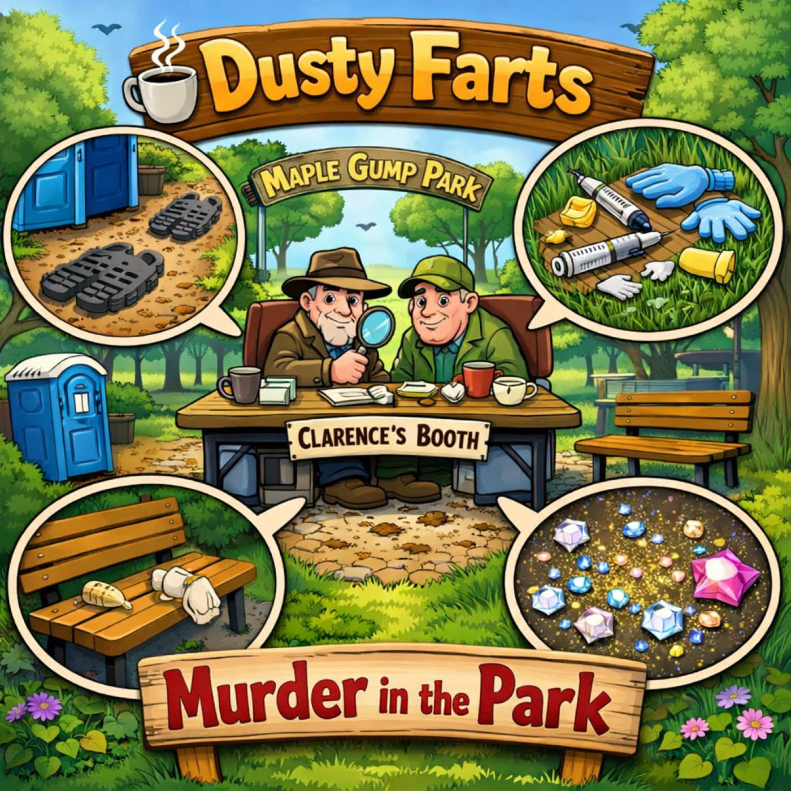
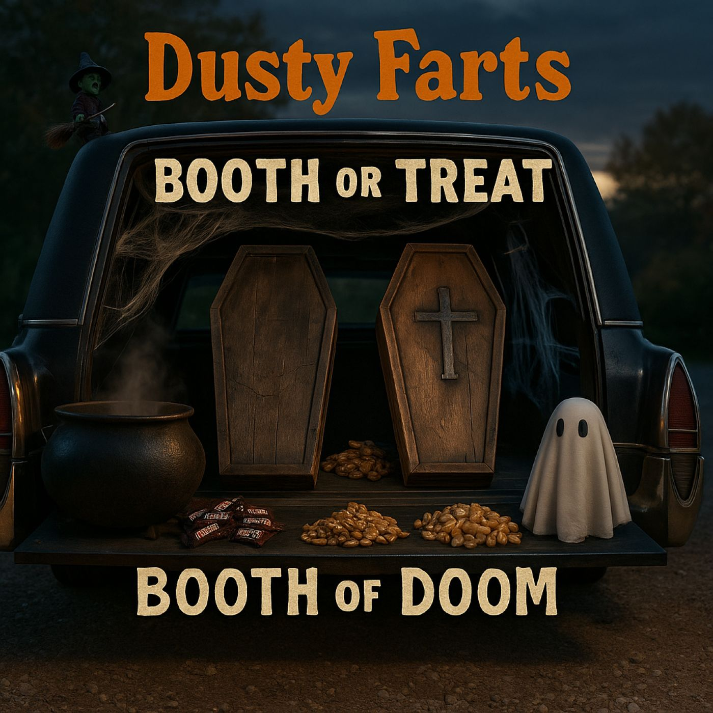
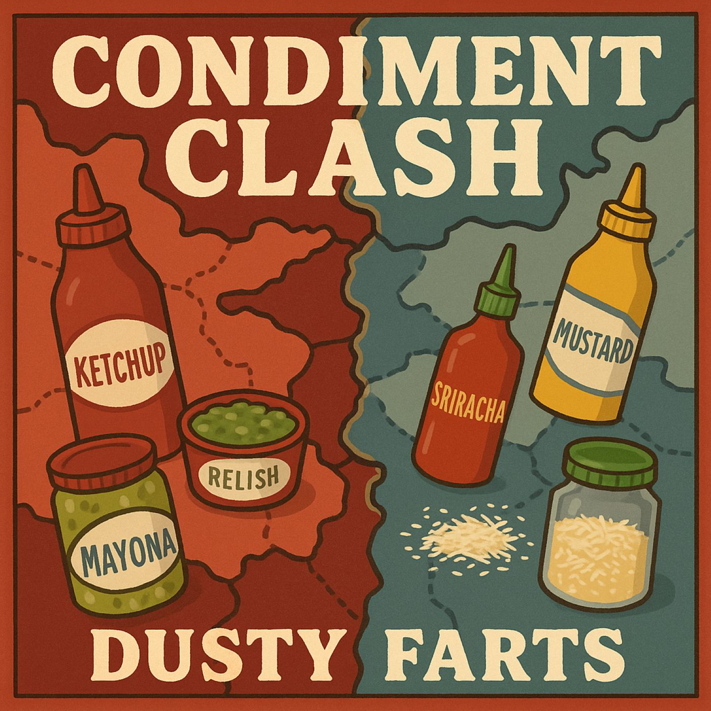
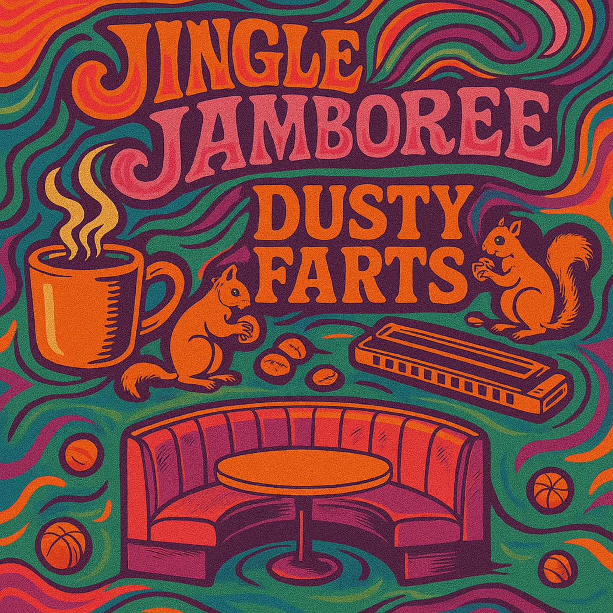
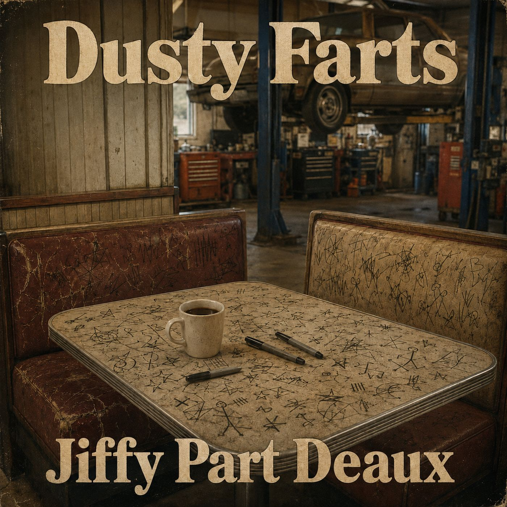
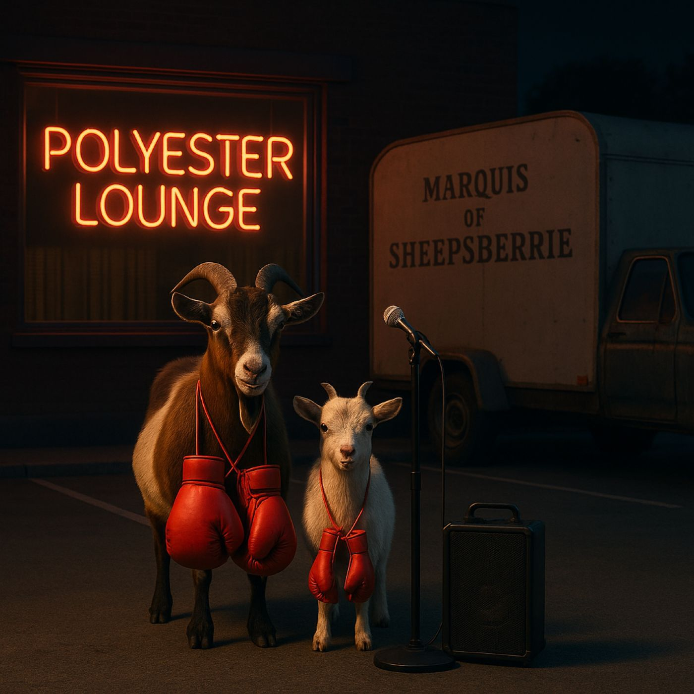
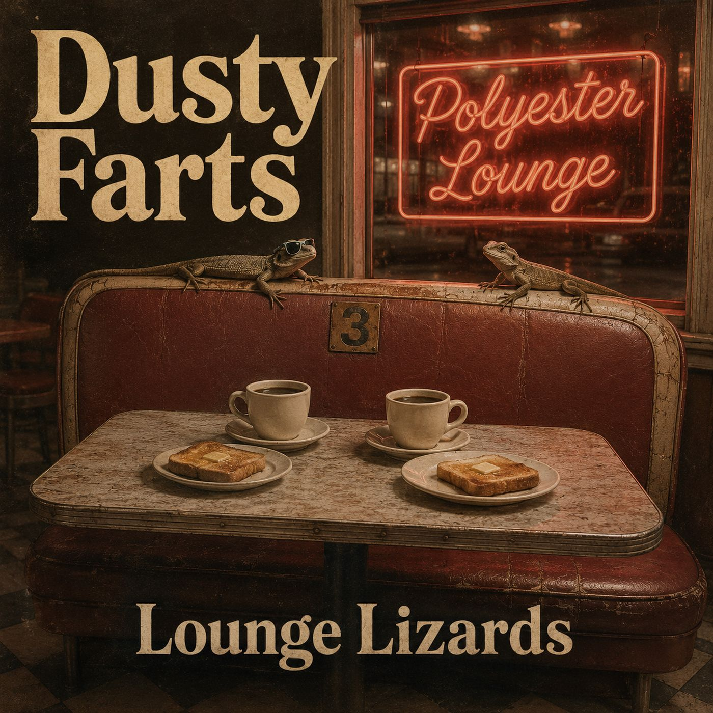
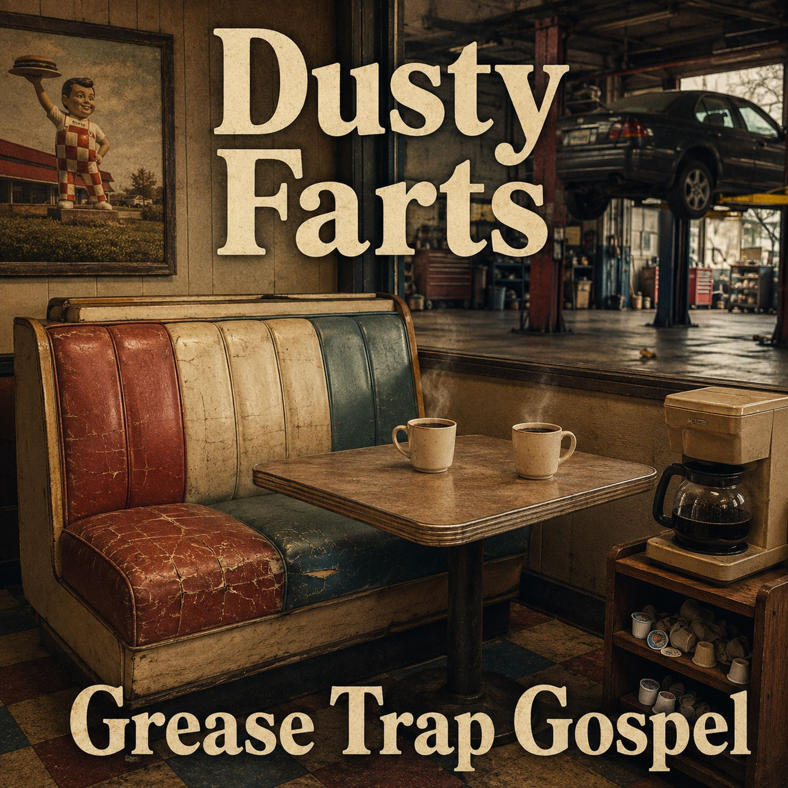

Episodes
Hope's complete record of grievances.
New around here? Start with Episode 1 — Dusty Farts is one continuous story, told in order.
-

January 1, 2026 · 23 min · 5 chapters
Episode 17: All Power to the Ball
Maple Grove unplugs itself fridge by fridge in pursuit of one clean New Year's countdown for the Ball.
-

December 24, 2025 · 30 min · 6 chapters
Episode 16: Murder in the Park
Clue-dini returns for his toughest case yet: a dead squirrel, on the table, in the booth.
-

November 21, 2025 · 17 min · 5 chapters
Episode 14: Drip, Drip, Horray!
John unlocks a self-diagnosed detective talent he calls Clue-dini, and the blood bus never fully recovers.
-

October 31, 2025 · 32 min · 7 chapters
Episode 12: Booth or Treat - The Maple Grove Spooktacular Special (Parts 12 and 13)
The boys build the Booth of Doom out of a borrowed hearse and two discount coffins for Maple Grove's Trunk or Treat contest.
-

October 27, 2025 · 21 min · 5 chapters
Episode 11: Condiment Clash
A missed blood-bus appointment turns hangry, and one wrong squirt of ketchup ignites a full tabletop condiment war.
-

October 20, 2025 · 29 min · 9 chapters
Episode 10: Jingle Jamboree
Aria hijacks the show for a jingle retrospective — every Dusty Farts earworm ever recorded, replayed, and lightly regretted.
-

October 13, 2025 · 22 min · 6 chapters
Episode 9: Freudean Fouls
The boys wander into the wrong therapy circle at the YMCA and come out with ink blots, doodles, and opinions about their own subconscious.
-

October 6, 2025 · 14 min · 4 chapters
Episode 8: Jiffy Part Deaux
Sharpie graffiti on the booth starts a turf war, and somewhere between torque angles and postal-carrier betting, Fred gives away his smart watch.
-

September 19, 2025 · 16 min · 4 chapters
Episode 7: Fight Club
A thermostat argument escalates into a full goat-boxing pageant in the parking lot, refereed by actual goats.
-

September 13, 2025 · 18 min · 5 chapters
Episode 6: Nuts and Dolts
Dusty and Farts set up camp on two toilets in a hardware store, taste-test espresso from a gnome, and turn plumbing into prophecy.
-

September 5, 2025 · 14 min · 4 chapters
Episode 5: Blood Brothers
The boys discover the blood donor bus has free cookies and recliners that basically count as a booth — Dr. Bobby's medical wisdom optional.
-

September 1, 2025 · 19 min · 5 chapters
Episode 4: Nut Jobs
John declares the park's squirrels a covert operation; Fred invents a rating scale for nuts, because if coffee gets one, so should pecans.
-

August 29, 2025 · 16 min · 5 chapters
Episode 3: Lounge Lizards
A hijacked prayer-request group chat becomes a coffee-rating scandal, and it turns out not all biscotti comes from a bakery.
-

August 22, 2025 · 15 min
Episode 2: Grease Trap Gospel
The boys make their weekly pilgrimage to the Jiffy Lube — not for oil changes, but for the free coffee and a front-row seat to the greasy ballet.
-

August 15, 2025 · 12 min
Episode 1: Pilot
Two forty-year friends claim a booth at the Polyester Lounge and redefine friendship as sarcasm, side orders, and one more refill of regret.